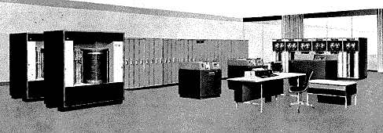
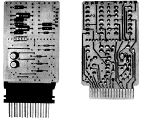

03/24/96
2023-11-08
The IBM 7070
I had a summer job operating and programming 1401 and 7070 in 1962 and 63 at Universal Oil Products Company in Des Plaines, Illinois. UOP was in the oil business, although you couldn't fill your tank with UOP gas: what they owned and made was patents. They owned the patent on Fluid Catalytic Cracking, and every drop of gasoline anybody burned had been processed through a refinery embodying a UOP patent. I got the job through Mr. David M. Boyd, who was chief instrumentation engineer at UOP.
General
 The 7070 was an interesting machine.
Because of the nature of its business, UOP had been an early user of computers, and had had an IBM 650 before my time there.
In some senses, the 7070 was a "transistorized 650."
There was a 650 simulator available for the 7070, and some of our production jobs ran under the simulator.
The 7070 was an interesting machine.
Because of the nature of its business, UOP had been an early user of computers, and had had an IBM 650 before my time there.
In some senses, the 7070 was a "transistorized 650."
There was a 650 simulator available for the 7070, and some of our production jobs ran under the simulator.
The 7070 had a machine word of ten decimal digits, plus a sign that could be positive, negative, or alphabetic. Each digit was represented by five bits, coded so that two out of the five were on and three off; if the machine encountered any digit that didn't have two-out-of-five, it halted immediately. Instead of the 650's drum memory, the 7070 had core memory, 10,000 words of it. Alphabetic information was coded as two decimal digits, so a word could hold five characters.
The front of the programmer's reference card lists the machine opcodes. The back lists the character set, the two-out-of-five code, and the special functions of some memory locations. The 7070 had three accumulators, which you could access with normal load and store operations, and also as addresses 9991, 9992, and 9993. The program counter was visible as location 9995. And the 99 index registers were also locations 0001 through 0099; each word had an indexing portion and a limit portion, and the indexing instructions compared the index to the limit and branched in various directions when the limit was hit.


The 7070 had the ability to overlap computation with I/O. You could start a tape operation and keep computing, and the machine would take an interrupt when the I/O completed. Data structures called RDWs, Record Definition Words, specified memory extents to be transmitted, and programs could chain these together to perform scatter-gather I/O.
Physically, the machine was imposing. It filled a large air-conditioned room with six-foot high boxes for the CPU and memory, and we also had six tape drives and an online card reader and card punch.

7070 system. The 7300 disk units pictured had a capacity of 12MB each. The UOP system didn't have any disk though.
Printing, card reading, and punching were usually done on the 1401 though, since its unit record equipment was faster. Tape was 200 or 556 BPI Model 729 tape drives. The machine operator sat at the 7150 console, a desk with a built-in typewriter and a small panel of lights and switches, and sequenced jobs through the machine. The machine logic was transistors, all right, mounted on SMS cards (Standard Modular System), with two transistors and a few other components per card, very similar to the flip-flops I was wiring in Mr. Boyd's basement.
Basic 7070 instructions took 36 microseconds, so that would be about 27 KIPS. But the machine had some very powerful instructions that took a lot longer than one cycle; for example, there were table lookup instructions that searched a whole table defined by an RDW.
Languages
The language of choice for the 7070 was an assembler called Autocoder. It had a kind of macros, mostly used for defining tape error handling (IOCS). (Autocoder macros couldn't define other macros, so the assembler wasn't Turing-equivalent.) We also used RPG, Report Program Generator, a file processing language where you specified the input record format, the desired output format, and simple calculations to be done on each record. Dr. Louis S. Kassel of UOP had also written a FORTRAN compiler which we used for the more heavily scientific calculations. We also used a preprocessor created by United Gas (another 7070 user) that took in decision tables and produced 7070 assembler.
Operating System
Our machine didn't have any disk, and normal operation was to load programs and data from cards or tape. There wasn't really any operating system: every job had the whole machine to itself. There was no relocating loader: all compilations and assemblies produced absolute output. In 1963 we experimented with a monitor called TOPSY, Tape OPerating System, that could actually run a sequence of jobs from tape, regaining control at the end of one job enough to load the next one; but some programs couldn't spare the few hundred locations it took to include TOPSY.
Stories
As I mentioned we didn't have disk on our machine. But some of the jobs we were running really needed random access storage. So one of the programmers, think it was Ken Johnson, wrote a package called "Son of RAMAC" that simulated disk on three tape drives, by writing in the middle of a tape. The job would spin tapes madly for about an hour, and if tape drive alignment crept a little, rewritten records would creep over other data and the job would print UNRECOVERABLE RAMAC ERROR, RERUN JOB.
Reliability of core was a concern when the machine was first introduced; that's the reason for the elaborate two-out-of-five coding. One summer, our machine began halting with a memory parity check at the same location in the same program. Everything else ran fine, and the CE diagnostics showed nothing. The problem was taken very seriously by IBM, who sent out more and more guys in ties and blue suits, until finally the machine designers were sent. They discovered that one of the power supplies was a little under specification, and that if the machine was reading cards, punching, and running multiple tape drives at the same time, there wasn't quite enough power to drive one particular core plane.

SMS cards. Actual size was 2 inches by 3.
 Bob Bemer wrote the story of the accidental genesis of the IBM 7070 in his story
Bob Bemer wrote the story of the accidental genesis of the IBM 7070 in his story  "Birth of an Unwanted IBM Computer."
"Birth of an Unwanted IBM Computer."
Copyright (c) 1996 by Tom Van Vleck